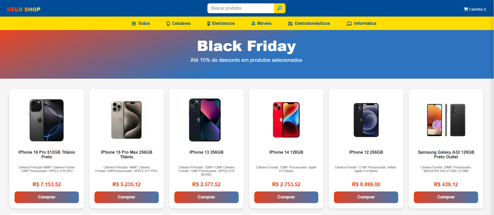
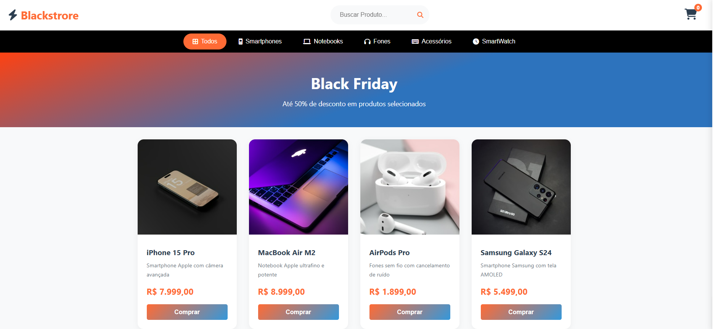
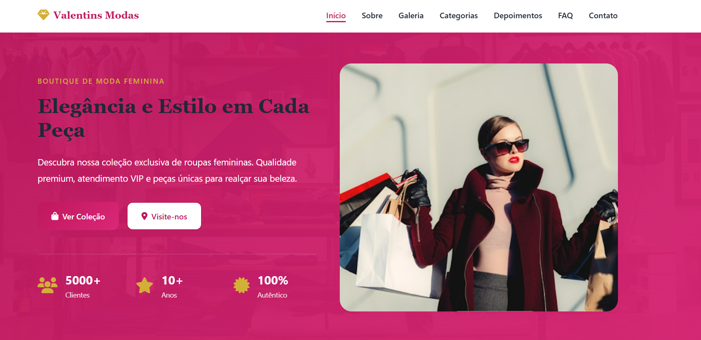
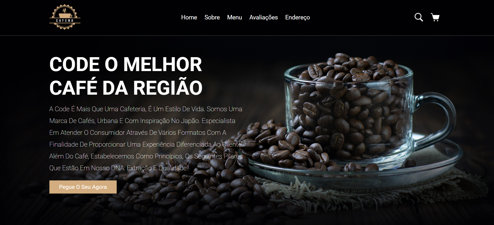
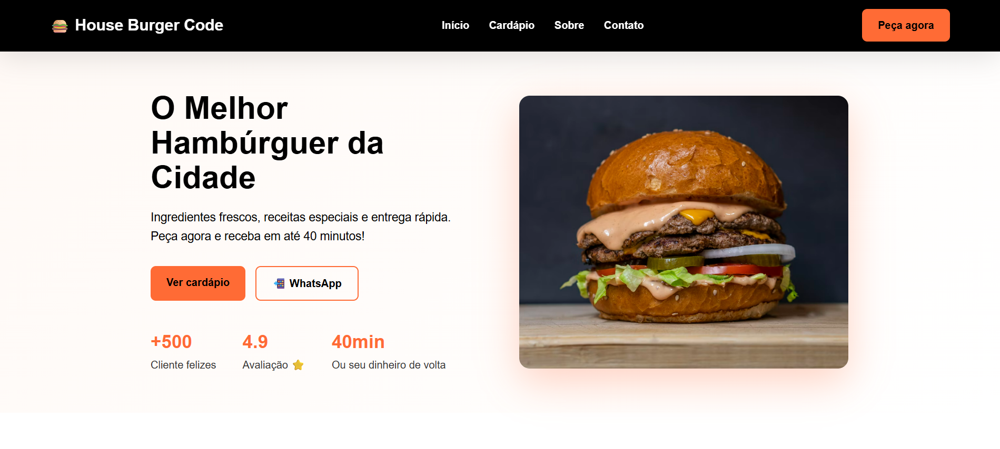
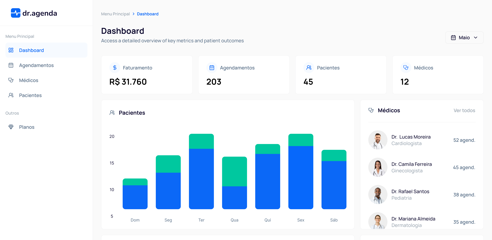

Meus Projetos







Desenvolvedor Full-stack Júnior , cursando análise e desenvolvimento de sistemas, experiência sólida
em processos técnicos e Hardware, Forte capacidade de resolução de problemas, lógica estruturada.
Aprendizado rápido, visão estratégica e atenção a detalhes. Forte em traduzir necessidades de usuários
em soluções simples, performáticas e alinhadas ao negócio, com foco em UX e qualidade. Experiência
em integrações (ex.: WhatsApp), automações com n8n, APIs REST, componentes reutilizáveis e deploy
(Vercel/Render).
Trabalhei com suporte técnico em sistemas com experiência em manutenção e relatórios de
desempenho em sistemas, análise de falhas, implementação de softwares corporativos. Motivado a
ingressar no mercado de trabalho, trazendo habilidades analíticas, pensamento crítico e experiência
multidisciplinar para agregar valor ao desenvolvimento de produtos digitais. Busco uma oportunidade
em colaborar com equipes inovadoras e continuar minha evolução profissional na área de tecnologia em
desenvolvimento de sistemas para aplicar meus conhecimentos em javascript, Node.js, React.js , Banco de dados e boas práticas
de código.
Desenvolvimento de interfaces de alta performance e sistemas de design escaláveis. Desenvolvo aplicações focadas em Core Web Vitals, garantindo que o produto não seja apenas visualmente impecável, mas extremamente rápido, acessível e otimizado para motores de busca (SEO).
Desenvolvimento de ecossistemas robustos e APIs resilientes. Focado em arquitetura de microsserviços, modelagem de dados complexos (SQL/NoSQL) e implementação de camadas de segurança, garantindo que o sistema suporte altas cargas mantendo baixa latência.
Engenharia de ponta a ponta: do design do banco de dados à interface do usuário. Tenho domínio completo do Ciclo de Vida de Desenvolvimento de Software (SDLC), integrando pipelines de CI/CD, testes automatizados e integração de serviços de terceiros para entregar produtos digitais prontos para o mercado.
Otimização de ambiente e implantação escalável. Configuração de servidores, automação de ambientes de desenvolvimento e garantia da disponibilidade do sistema através de monitoramento e melhores práticas de Infraestrutura como Código (IaC).
Diagnósticos e otimização de infraestrutura local. Trabalho na arquitetura de máquinas personalizadas para alta performance, atualizações estratégicas e recuperação de sistemas operacionais, focando em extrair o máximo desempenho do hardware disponível.
em Manutenção 🚧
Atualmente estou adquirindo novas habilidades.